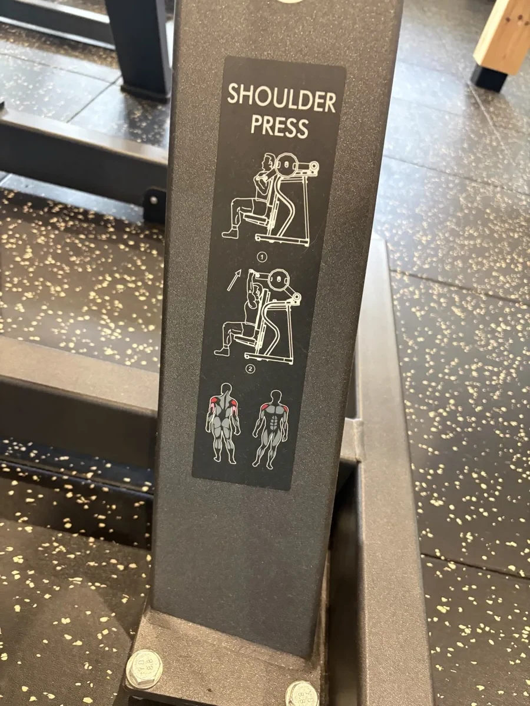

TRAINING PROGRAM
上半身 / 下半身の2分割
各部位を週2回。曜日は固定しない。行った日に「次の順番」をやるだけ。
ROTATION
上半身
下半身 A
上半身
下半身 B
週4回なら上・下・上・下。週3回なら上・下・上 → 翌週は下・上・下と自然にずれていくので、曜日を気にしなくていい。土日が不定期でも崩れない。
下半身だけはA・Bの2種類があり、行くたびに交互にします。違うのはルーマニアンデッドリフトとヒップスラストのセット数だけ（下半身タブに記載）。どっちの日か分からなくなったらAをやってください。
下半身だけはA・Bの2種類があり、行くたびに交互にします。違うのはルーマニアンデッドリフトとヒップスラストのセット数だけ（下半身タブに記載）。どっちの日か分からなくなったらAをやってください。
ワイドチェストプレス
座って、胸の前のグリップを前に押し出す

ラットプルダウン
座って、頭の上のバーを胸まで引き下ろす

ショルダープレス NEW
座って、耳の横から真上にグリップを押し上げる

これは何か: ジムにある、この写真のマシンです。チェストプレスの「上向き版」だと思ってください。座って、耳の横にあるグリップを真上に押し上げる動きで、胸ではなく肩を鍛えます。
ウエストヒップ比0.95（高判定）の見た目を改善する最短ルートは、腹を細くするより肩幅を出すことです。肩に丸みがつくと、腹囲が同じでもウエストが細く見えます。今まで一度も使っていないマシンです。
ウエストヒップ比0.95（高判定）の見た目を改善する最短ルートは、腹を細くするより肩幅を出すことです。肩に丸みがつくと、腹囲が同じでもウエストが細く見えます。今まで一度も使っていないマシンです。
- シートの高さを調整し、背中を背もたれにつける
- グリップは肩幅よりやや広め。握った時に肘が90度になる位置
- 耳の横から真上に押し上げる
- 肘は伸ばしきる手前で止める
- 下ろすのは耳の高さまで。それ以上下げない
注意: 肘を体の前に出しすぎない（胸に逃げる）。逆に真横に開きすぎると肩の関節を痛める。耳の横のラインを守る。下げすぎも肩を痛める原因。
初回の決め方: 20kgで10回やってみる。楽なら次のセットで上げる。12回が限界の重さを探す。ここは焦らず、軽めから。
シーテッドロウ
座って、正面のハンドルを手前に引く

サイドレイズ NEW
立って、両手のダンベルを真横に肩の高さまで上げる

これは何か: ダンベルを両手に持って立ち、鳥が羽を広げるように真横に上げるだけの種目です。マシンは使いません。肩の「横」を作ります。
ショルダープレスは肩の前が主役なので、横はこれでしか作れません。加えて左腕3.24kg / 右腕3.39kg（約5%差）の左右差は、両手同時に動かすマシンでは開いたままになります。片手ずつ扱うダンベルで埋めます。
ショルダープレスは肩の前が主役なので、横はこれでしか作れません。加えて左腕3.24kg / 右腕3.39kg（約5%差）の左右差は、両手同時に動かすマシンでは開いたままになります。片手ずつ扱うダンベルで埋めます。
- 立って両手にダンベル。体の横に下ろす
- 肘を軽く曲げたまま固定
- 真横に、肩の高さまで上げる
- 肩の高さで止める。それ以上上げない
- 3秒かけて下ろす
この種目だけは重くしない: 5kgで十分効きます。重くすると反動を使ってしまい、首の付け根（僧帽筋）に逃げて肩に効かなくなる。12回できたら重量ではなく回数を15回まで伸ばすのが正解。
チェストプレス 3セット
ラットプルダウン 3セット
ショルダープレス 3セット
シーテッドロウ 3セット
サイドレイズ 2セット
腹筋ローラー 3セット
有酸素 30分
予備枠：腕（やるかどうかは、その日に決める）
腕の見た目を優先したい日だけ入れます。毎回やる必要はありません。
入れる日は、シーテッドロウを3セット → 2セットに減らす。時間を増やさないためです。
2種目とも同じ日にやらない。やる日はどちらか片方だけ。次にやる日はもう片方。
なぜ予備扱いかというと、チェストプレスやラットプルダウンでも腕は使われるので、腕の種目がないと筋肉が増えないというほどではないからです。ただし腕が限界に達する前に胸や背中が先に限界になるため、刺激は腕に届き切りません。腕の見た目を優先するなら直接やった方が確実、という位置づけです。
腕の見た目を優先したい日だけ入れます。毎回やる必要はありません。
入れる日は、シーテッドロウを3セット → 2セットに減らす。時間を増やさないためです。
2種目とも同じ日にやらない。やる日はどちらか片方だけ。次にやる日はもう片方。
なぜ予備扱いかというと、チェストプレスやラットプルダウンでも腕は使われるので、腕の種目がないと筋肉が増えないというほどではないからです。ただし腕が限界に達する前に胸や背中が先に限界になるため、刺激は腕に届き切りません。腕の見た目を優先するなら直接やった方が確実、という位置づけです。
ケーブルプレスダウン 予備
立って、上のロープを真下に押し下げる
担当は二の腕の裏（上腕三頭筋）。 今まで使っていたケーブルマシンの、ロープを付けて行う種目です。「二頭筋の裏側」と呼んでいたのは、正確にはこの上腕三頭筋のことです。
腕の太さは三頭筋が3分の2を占めるので、腕を太く見せたいならこちらが本命です。
腕の太さは三頭筋が3分の2を占めるので、腕を太く見せたいならこちらが本命です。
- ケーブルを一番上にセットし、ロープを付ける
- マシンの正面に立ち、ロープを両手で握る
- 脇を締めて肘を体の横に固定（ここから肘は動かさない）
- 肘から先だけで真下に押し下げる
- 下で1秒止め、二の腕の裏を締める
- ゆっくり戻す。肘の位置は最後まで動かさない
肘が体から離れたら、それは重すぎです。 上体を前に倒して体重で押すのもなし。重量より、肘を固定できているかが全て。
上げ幅: 12回できたら目盛り1つ分。
ダンベルカール（片手ずつ） 予備
立って、ダンベルを片手ずつ肩まで巻き上げる
担当は力こぶ（上腕二頭筋）。 両手同時ではなく片手ずつやってください。左腕3.24kg / 右腕3.39kg（約5%差）の左右差があるためです。
ただしこの5%はInBodyの測定誤差の範囲内でもあるので、右腕だけ追加で鍛えるようなことはしません。左から始めて、左右まったく同じ重量・同じ回数にするだけで十分です。左が先にバテたら、その回数に右を合わせます。
ただしこの5%はInBodyの測定誤差の範囲内でもあるので、右腕だけ追加で鍛えるようなことはしません。左から始めて、左右まったく同じ重量・同じ回数にするだけで十分です。左が先にバテたら、その回数に右を合わせます。
- 立って、片手にダンベル。もう片方は腰か手すりに添える
- 肘を体の横に固定（前に出さない）
- 手のひらを上に向けたまま、肩に向けて巻き上げる
- 上で1秒止める
- 3秒かけて下ろす。伸ばしきる手前で止める
- 左腕から。終わったら右腕を同じ回数
反動を使ったら意味がありません。 体を反らせて振り上げるのは重すぎのサイン。効いているのは腰であって腕ではない。
上げ幅: 左右とも12回できたら次のダンベルへ（2.5kg刻み）。
削除した種目: ペックフライ、ケーブルフライ。チェストプレスと役割が重複しており、その時間をショルダープレスに回した方が効果が大きいため。
下半身の日は2種類あります。行くたびにA → B → A → Bと交互に。
違うのはルーマニアンデッドリフトとヒップスラストのセット数だけ。他の3種目は両日とも同じです。
A（腰の日） RDL 3セット ／ ヒップスラスト 2セット
B（お尻の日） RDL 2セット ／ ヒップスラスト 3セット
理由: RDLだけ腰と裏ももの疲労が突出して大きく、回復に48〜72時間かかります。週2回だと中2日しかない。そこに傾斜12.5%の歩き30分が毎回入り、これも裏ももとお尻を使うので疲労が重なる。RDLを週6セット→週5セットに落とし、減らした1セットをヒップスラストへ移す。お尻の総量は落とさず、腰の負担だけ下げます。
どっちの日かを覚えていなければAをやってください（重い方が本番）。
違うのはルーマニアンデッドリフトとヒップスラストのセット数だけ。他の3種目は両日とも同じです。
A（腰の日） RDL 3セット ／ ヒップスラスト 2セット
B（お尻の日） RDL 2セット ／ ヒップスラスト 3セット
理由: RDLだけ腰と裏ももの疲労が突出して大きく、回復に48〜72時間かかります。週2回だと中2日しかない。そこに傾斜12.5%の歩き30分が毎回入り、これも裏ももとお尻を使うので疲労が重なる。RDLを週6セット→週5セットに落とし、減らした1セットをヒップスラストへ移す。お尻の総量は落とさず、腰の負担だけ下げます。
どっちの日かを覚えていなければAをやってください（重い方が本番）。
レッグプレス
座って、足元のプレートを足で押し出す

ルーマニアンデッドリフト
立って、バーベルを持ったままお辞儀をする

変更点: 今まで毎回・週3〜4回 × 4セットやっていたのを、週2回（Aは3セット / Bは2セット）に減らします。腰と裏ももの回復には48〜72時間かかるため、毎回やると疲労が抜けません。減らした分、重量を60kg → 65〜70kgに上げます。
Bの日を2セットにしているのは、傾斜12.5%の歩き30分が毎回入って裏もも・お尻の疲労が重なるためです。減らした1セットはヒップスラストに移してあるので、お尻の総量は落ちません。
Bの日を2セットにしているのは、傾斜12.5%の歩き30分が毎回入って裏もも・お尻の疲労が重なるためです。減らした1セットはヒップスラストに移してあるので、お尻の総量は落ちません。
- バーを肩幅で握り、足は腰幅で立つ
- 膝を軽く曲げた状態で固定（ここから膝は動かさない）
- お尻を後ろに引きながらバーを太ももに沿って下ろす
- 裏ももが突っ張った位置で止める（膝下まで下ろさなくていい）
- お尻を締めながら体を起こす
最重要の注意: 背中が丸まった瞬間に腰を壊す種目です。胸を張り、背中は常に一直線。バーは体から離さず、太ももを擦るくらい近くを通す。背中が丸まるならそこが今日の限界。重量を下げる。
効いている場所の確認: 裏もも（ハムストリング）とお尻が張るなら正解。腰だけが痛いならフォームが崩れている。その日は中止していい。
上げ幅: 両端に2.5kgずつ（計 +5kg）。ただしこの種目だけは、12回できてもフォームが崩れるなら上げない。
レッグカール NEW
うつ伏せ（か座って）、かかとをお尻に引き寄せる

これは何か: すでに足の日に使っている、この写真のマシンです。同じマシンで動きが2種類あります。膝を伸ばす動き（レッグエクステンション）＝前もも、曲げる動き（レッグカール）＝裏もも。
今やっているのがどちらか本人も不明とのことなので、「かかとをお尻に引き寄せる」方をやってください。裏ももへの直接刺激が今までRDLだけだったので、RDLを週2回に減らす分をここで補います。
今やっているのがどちらか本人も不明とのことなので、「かかとをお尻に引き寄せる」方をやってください。裏ももへの直接刺激が今までRDLだけだったので、RDLを週2回に減らす分をここで補います。
- マシンにうつ伏せ、または座って設定（機種による）
- アキレス腱の少し上にパッドを当てる
- かかとをお尻に近づけるように曲げる
- 曲げきったら1秒キープ
- 3秒かけて戻す。伸ばしきらない
ポイント: 腰が浮くのは重すぎるサイン。
初回の決め方: 20kgで10回できるか試す。12回いけるなら次のセットから目盛り1つ上げる。
ヒップスラスト NEW
ベンチに背中を預けて、お尻を持ち上げる
下腹対策の本命です。 ベンチに肩甲骨だけを乗せ、床に足をついて、腰の上にダンベルを置き、お尻を上下させる種目です。
骨盤が前に倒れている（反り腰）と、内臓が前に押し出されて実際より腹が出て見えます。骨盤前傾は「前もも・股関節が硬い」＋「お尻と腹の奥が弱い」で起きます。今までストレッチ（伸ばす方）しかやっていなかったので、4ヶ月やっても変わらなかった。これは鍛える方の担当で、お尻に最も効く種目です。
骨盤が前に倒れている（反り腰）と、内臓が前に押し出されて実際より腹が出て見えます。骨盤前傾は「前もも・股関節が硬い」＋「お尻と腹の奥が弱い」で起きます。今までストレッチ（伸ばす方）しかやっていなかったので、4ヶ月やっても変わらなかった。これは鍛える方の担当で、お尻に最も効く種目です。
- ベンチに肩甲骨だけを乗せる（背中全体ではない）
- 足は肩幅、膝が90度になる位置に置く
- 腰の付け根（骨盤の前）にダンベルを縦に置き、両手で支える
- お尻の力だけで腰を持ち上げ、肩から膝まで一直線に
- 一番上で1秒お尻を締める
- ゆっくり下ろす。床につく手前で次の1回へ
注意: 一直線より上に持ち上げて腰を反らせない。反らせると腰の種目になってお尻に効かなくなる。あごを軽く引いて、視線は正面か少し下。
初回: まずダンベルなし（自重）で10回やってフォームを覚える。お尻が「効いている」感覚がつかめてから重りを足す。
デッドバグ NEW
仰向けで、対角の手と足をゆっくり伸ばす
これは何か: 仰向けに寝て、両手を天井・両膝を90度に上げた「死んだ虫」のような姿勢から、右手と左足を同時にゆっくり伸ばして戻すだけの種目です。器具は要りません。マットの上でできます。
腹筋ローラーが鍛えるのは腹直筋（表面）。下腹を内側から引き締めるのは腹横筋という、腹をコルセットのように巻いている奥の筋肉です。ここは「力を入れて動かす」種目では鍛えにくく、腰を固定したまま手足を動かすこの種目が最も効きます。
腹筋ローラーが鍛えるのは腹直筋（表面）。下腹を内側から引き締めるのは腹横筋という、腹をコルセットのように巻いている奥の筋肉です。ここは「力を入れて動かす」種目では鍛えにくく、腰を固定したまま手足を動かすこの種目が最も効きます。
- 仰向けに寝て、両手を天井にまっすぐ伸ばす
- 膝を90度に曲げて、太ももが床と垂直になるまで上げる
- 腰を床に押し付ける（ここが一番大事。手が入る隙間をなくす）
- 息を吐きながら、右手と左足をゆっくり伸ばす
- 床につく手前で止め、ゆっくり戻す
- 左右交互に。10回ずつ
腰が浮いたら、そこが限界。 手足を遠くまで伸ばすことより、腰が床から離れないことが全てです。浮くなら、伸ばす範囲を小さくする。地味ですが、これが正しくできているかどうかで結果が変わります。
効いている確認: 下腹の奥がプルプルしてくれば正解。腰が痛いなら腰が浮いている。
レッグプレス 3セット
RDL A:3セット / B:2セット
レッグカール 3セット
ヒップスラスト A:2セット / B:3セット
デッドバグ 2セット
有酸素 30分
脚が回復していないサインが出たら、傾斜を12.5% → 10%に下げる。次のどれかが出たときです。感覚だけで判断できます。
・下半身の日に重量・回数が落ち続ける ・RDLの後、腰の張りが翌日まで残る ・翌朝まで脚の疲労が強い ・膝／アキレス腱／足の裏に痛みが出る
・下半身の日に重量・回数が落ち続ける ・RDLの後、腰の張りが翌日まで残る ・翌朝まで脚の疲労が強い ・膝／アキレス腱／足の裏に痛みが出る
削除した種目: アダクター（内もも）。優先度の低い小さい筋肉に3セット使うのは、限られた40分の中では割に合わないため。